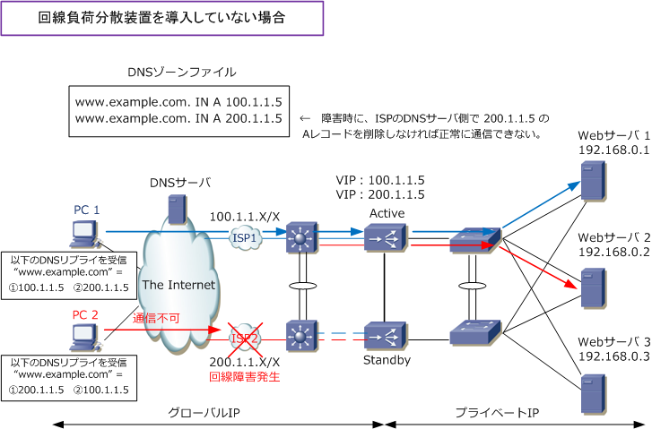
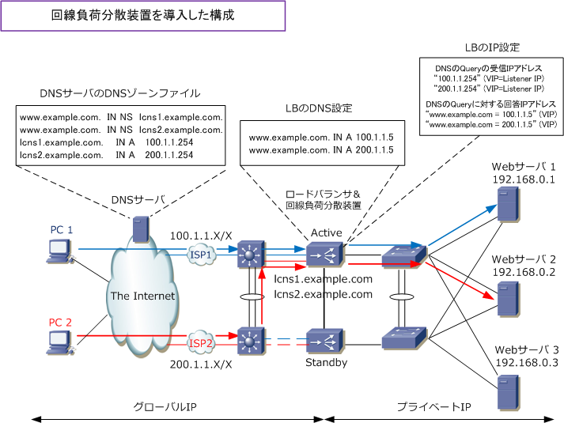
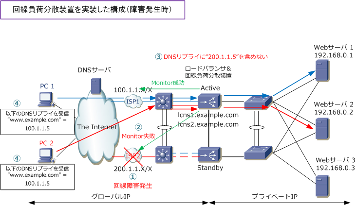

Load Balancing - DNS round robin / Link Load Balance
回線負荷分散装置を導入していない場合
下図のISP2側で障害が発生しても、DNSサーバのDNSラウンドロビンは通信相手の障害を検知する ことができないので、クライアントPC1とPC2が下図のDNSリプライを受信するとします。その場合、 PC2は一時的に通信できない状態になります。この問題を解決するためには回線負荷分散装置が必要。

※ 以下の内容はDNSサーバの知識だけでなく高度なロードバランサの知識が必要となるので、初心者の方は理解できなくてもOK。
回線負荷分散装置とは
回線負荷分散装置は、DNSサーバ（ Aレコードの応答可能なサーバ ）としても動作する負荷分散装置のこと。 下図はF5社の回線負荷分散装置を使用した時の構成です。本構成を実現するためには外部DNSサーバの設定の 一部を回線負荷分散装置に権限委譲する必要があります。DNSサーバのAレコード（www.example.com. IN A) を以下ように回線負荷分散装置に設定（権限委譲）します。外部DNSサーバでは、以前設定していたAレコード を以下のようにNSレコード（www.example.com. IN NS lcns1.example.com）にして、回線負荷分散装置の FQDN（ lcns1.example.com ）を指定します。最後にそのFQDNのAレコードとして100.1.1.254のIPを指定。

メーカーの仕様によりますが回線負荷分散装置はAレコードしか応答できない簡易DNSサーバであることから 「www.example.com. IN NS lcns.example.com」ではなく「example.com. IN NS lcns.example.com」 のように指定してしまうと example.com 全体が委譲されてしまうことから、上図のように指定しています。
下図のようにISP2の回線障害が発生した場合、回線障害を検知した回線負荷分散装置はDownしている側の IPアドレス「200.1.1.5」をDNSリプライに含めなくなって、DNSリプライには「 100.1.1.5 」だけを送信 するようになります。その結果、すべてのクライアントPCは「 www.example.com = 100.1.1.5 」として 正常な通信を継続することができます。
